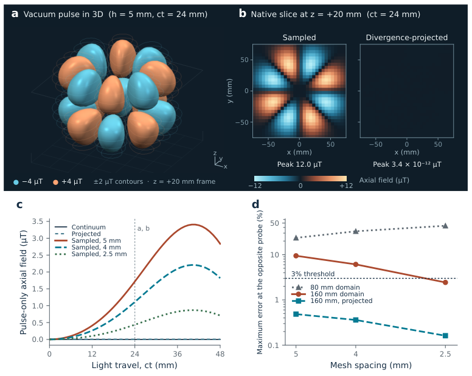

Imports a Lean 4 relativistic Vlasov–Maxwell formalization and adds eleven new Lean modules proving exterior-field, Poynting-balance, Yee-invariance and mode-rank bounds used to certify PIC solvers.
Abstract
AI now produces machine-checked mathematics faster than researchers can read it. Can such theorems do practical computational work? We reuse one from OpenAI's Lean 4 relativistic Vlasov–Maxwell library: initial fields determine the field at an outside point until plasma signals reach it, and the energy leaving a surrounding box before they reach its faces. New Lean proofs and numerical bounds give particle-free references for particle-in-cell simulations across three tasks. Domain size follows analytically from observation time, exposing boundary and initialization errors in WarpX and Smilei that global energy checks missed. Grid choice can be tested directly: combining two coarse grids recovers unknown plasma inputs within tolerance at a median 14.9-fold speedup over a fine grid, where the medium grid alone fails. For reduced models, the bounds establish the minimum number of time curves needed to predict energy loss.
Problem
Three-dimensional relativistic plasma simulations rarely have closed-form references. Global checks such as total energy can miss local errors that cancel across space. The authors ask whether machine-generated Lean theorems can supply solver-independent references for particle-in-cell codes.
Approach
The authors reuse OpenAI's Lean 4 lemma that, outside the light cone of an initially compact plasma, the field equals the source-free Maxwell evolution of the initial fields. On top of it they add Lean modules for six-face Poynting balance, discrete Yee zero-B_z invariance, opposite-probe symmetry, rational flux sums and mode-rank and query lower bounds. These build on Mathlib, OpenAI's library and a 39-module earlier artifact. Combined with outward-rounded interval enclosures, the proofs certify probe fields and box-energy changes from initial data alone, and the certified references are compared against WarpX and Smilei simulations.
Results
The certified references exposed boundary truncation and staggered-grid initialization errors in WarpX and Smilei that global energy checks missed. Two-grid extrapolation recovered unknown plasma inputs within tolerance at a median 14.9-fold speedup over a fine grid, where the medium grid alone failed. Lean-verified bounds show that two shared time profiles are the exact minimum needed to predict energy loss at a 1.8 μJ tolerance.

Figure 2: Grid sampling creates a spurious axial magnetic field in Smilei. a , Axial field B_{z} of the vacuum pulse on a 5 mm mesh at 80.1 ps. Pulse symmetry requires B_{z}=0 everywhere. b , The marked slice at z=+20 mm with direct sampling (left) and after enforcing zero discrete divergence of the initial pulse on the grid (right). c , Vacuum field at the positive probe for three mesh spacings.